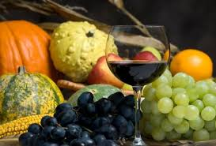
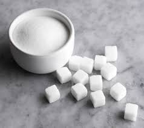
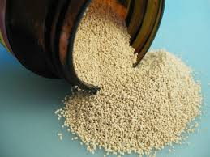
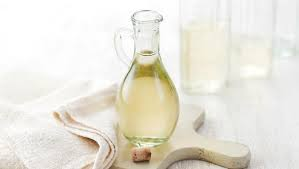

INGREDIENTS
|  | FRUITS OR VEGETABLESTo extract the flavour and colour. |
|  | SUGAROrdinary household sugar will suffice. The larger amount of sugar used, the more alcohol will be formed, within reason, but the yeast will not tolerate too much sugar. When the yeast has converted as much of the sugar as possible into alcohol, the fermentation will stop. Each pound of sugar added to the must will increase the quantity of the liquid by half a pint. |
|  | YEASTA wine yeast gives the best results, although bakers yeasts can be used. An all-purpose wine yeast is suitable but some recipes recommend the use of specific wine yeasts such as Bordeaux, Chablis, Tokay, Burgundy, Champagne etc. |
 |
YEAST NUTRIENTThis is particularly useful for flower wines and other wines where the liquor is likely to be deficient in certain minerals. |
 |
YEAST ENERGISERYeasts require a certain amount of vitamins for a good fermentation. When vitamins are lacking, such as in dried and canned fruits, this is a useful ingredient. |
|  | ACIDIt is important to add some acid to the wine such as lemons or other citric acids. This gives the wine a lively flavour. Tartaric acid is another ingredient and this has a harsher flavour. |
 |
GRAPE TANNINMost fruits contain some tannin but this is frequently insufficient. Tannin gives the wine more body and the wine tends not to spoil. This should be added prior to fermentation as if this is added at a later date the wine may become hazy. A half a pint of strong tea can sometimes be substituted for tannin. |
 |
PECTIN ENZYMESThese break down the glutinous matter present in fruit (this works at temperatures 40°C to 60°C). Pectin enzymes will also clarify a wine which is cloudy due to the presence of pectin. |
 |
CAMPDEN TABLETSThese tablets kill the undesirable wild yeasts and bacteria in the must and stop wines from taking up air and developing off flavours. Campden tablets can also be used to make a sterilizing solution. |